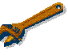
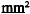
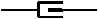

|  |
|  |  | |||
|---|---|---|---|---|
| 1 | 0.75 | 3AJB | COMANDO+ MOTOR BORBOLETA | F005E |
| 2 | 0.75 | 3AJC | COMANDO- MOTOR BORBOLETA | F005E |
| 3 | 0.5 | 3MO | -SENSOR POTENCIÓMETRO POSIÇÃO BORBOLETA ELÉCTRICA | F005A |
| 4 | 0.5 | 3MQ | SINAL POTENCIÓMETRO 2 POSIÇÃO BORBOLETA ELÉCTRICA | F005A |
| 5 | 0.5 | 3MN | +5 VOLT POTENCIÓMETRO DE POSIÇÃO DA BORBOLETA ELÉCTRICA | F005A |
| 6 | 0.5 | 3MP | SINAL POTENCIÓMETRO 1 POSIÇÃO BORBOLETA ELÉCTRICA | F005A |